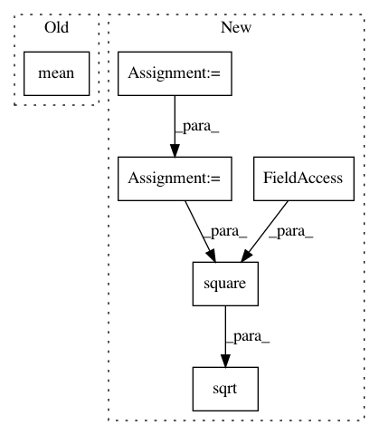

2f1f42eeb68c64ff991c0ae2e8253a9305e90f74,autokeras/hypermodel/processor.py,Normalize,fit,#Normalize#Any#Any#,82
Before Change
def fit(self, hp, data):
axis = tuple(range(len(data.shape) - 1))
self.mean = np.mean(data,
axis=axis,
keepdims=True).flatten()
self.std = np.std(data,
After Change
def sum_up_square(old_state, new_elem):
return old_state + tf.square(new_elem)
num_instance = data.reduce(np.float64(0), lambda x, _: x + 1)
total_sum = data.reduce(np.float64(0), sum_up) / num_instance
self.mean = tf.reduce_mean(total_sum, axis=axis)
total_sum_square = data.reduce(np.float64(0), sum_up_square) / num_instance
square_mean = tf.reduce_mean(total_sum_square, axis=axis)
self.std = tf.sqrt(square_mean - tf.square(self.mean))
def transform(self, hp, data):
Transform the test data, perform normalization.
In pattern: SUPERPATTERN
Frequency: 3
Non-data size: 6
Instances
Project Name: keras-team/autokeras
Commit Name: 2f1f42eeb68c64ff991c0ae2e8253a9305e90f74
Time: 2019-07-04
Author: jhfjhfj1@gmail.com
File Name: autokeras/hypermodel/processor.py
Class Name: Normalize
Method Name: fit
Project Name: PacktPublishing/Deep-Reinforcement-Learning-Hands-On
Commit Name: e70bdb2d089ae283781c45b8d97963823a984baa
Time: 2017-12-15
Author: max.lapan@gmail.com
File Name: ch10/00_pong_pg.py
Class Name:
Method Name: